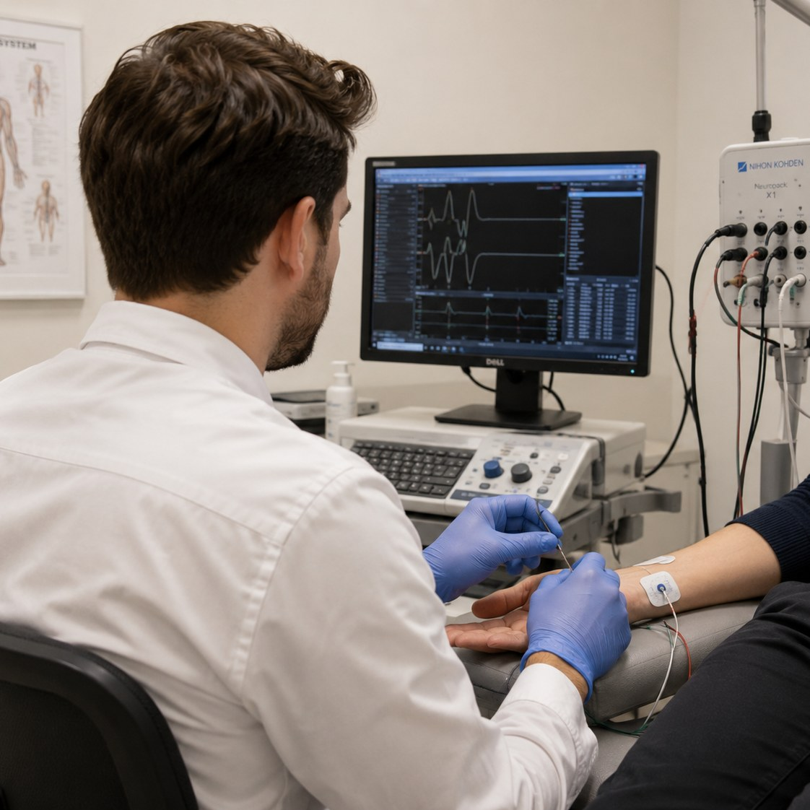
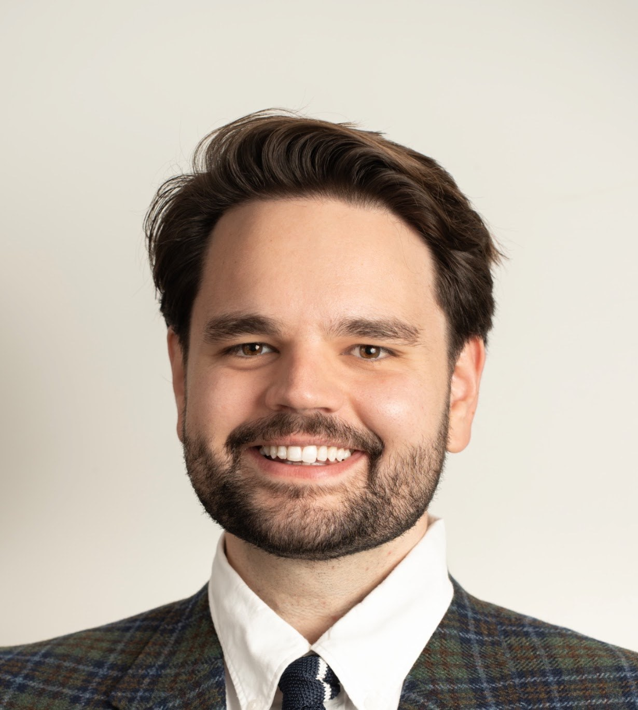
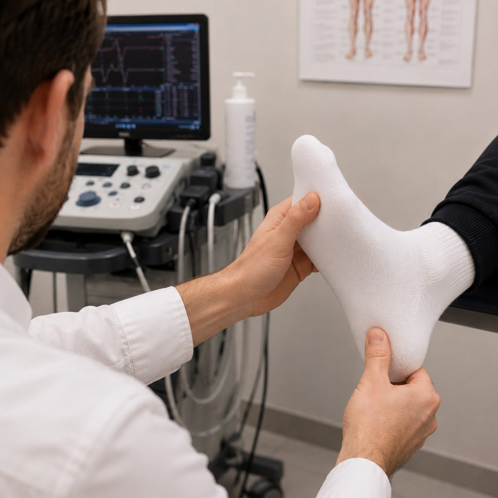
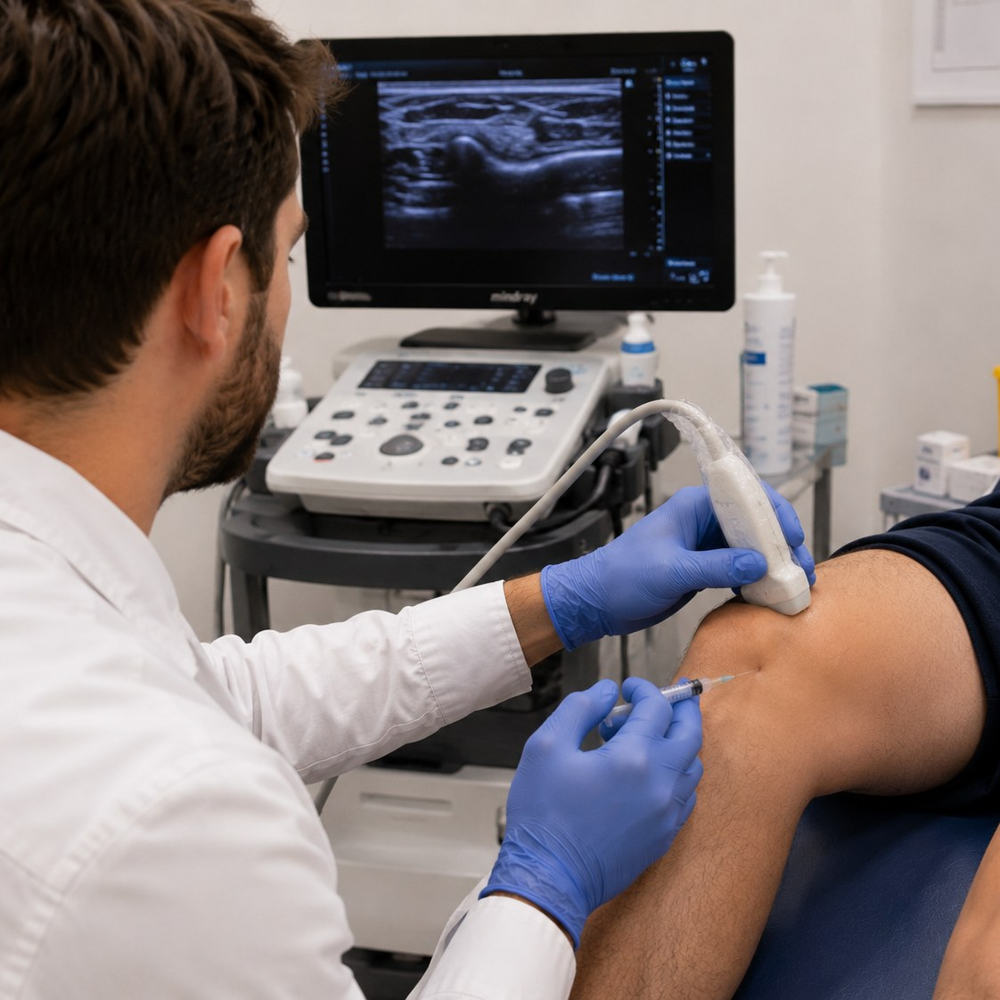
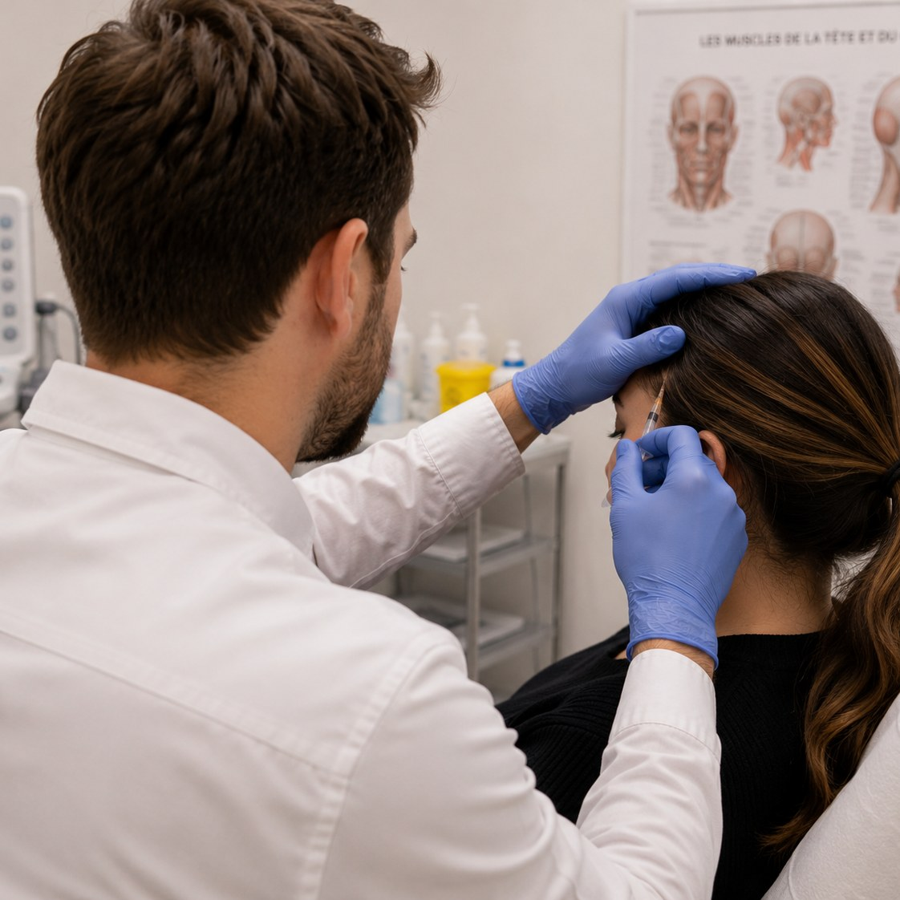

01Électromyographie
Évaluer le fonctionnement des nerfs et des muscles pour aider à préciser le diagnostic.
Dr Andrei Bursuc · Physiatre
Une pratique axée sur la médecine neuro-musculosquelettique, la mobilité et l’autonomie.
5515, rue Saint-Jacques Ouest, bureau 101
Montréal, Québec H4A 2E3

Domaines de pratique
Évaluation et traitements en médecine physique et réadaptation.

01Évaluer le fonctionnement des nerfs et des muscles pour aider à préciser le diagnostic.

02Prise en charge de la raideur et des spasmes musculaires associés aux atteintes neurologiques.

03Utiliser l’échographie pour cibler une articulation, un tendon ou un nerf.

04Injections de toxine botulinique dans le cadre de la prise en charge des migraines chroniques.
Une référence médicale est requise. Communiquez avec la clinique pour connaître les modalités de consultation.
Parcours
Spécialiste en médecine physique et réadaptation, le Dr Bursuc exerce à Montréal à la Clinique de physiatrie CDN. Sa pratique comprend l’électromyographie, la gestion de la spasticité et les infiltrations échoguidées.
Pour les professionnels et les étudiants
Des outils interactifs pour approfondir l’anatomie, la localisation neurologique et les techniques en neuro-orthopédie.
Accéder aux outils d’éducationPour les patients